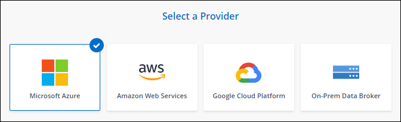
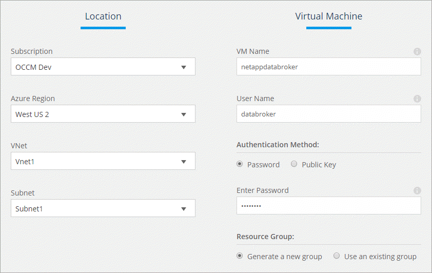

要求變更文件
要求變更文件 編輯此頁面
編輯此頁面 瞭解如何作出貢獻
瞭解如何作出貢獻在Azure中建立新的資料代理程式
當您建立新的資料代理人群組時、請選擇Microsoft Azure、將資料代理人軟體部署在vnet中的新虛擬機器上。本頁將會重複提供安裝程序的支援、協助您做好安裝準備。 Cloud Sync
您也可以選擇在雲端或內部部署的現有 Linux 主機上安裝資料代理程式。 "深入瞭解"。
支援的 Azure 地區
除了中國、美國 Gov 和美國 DoD 地區之外、所有地區都受到支援。
網路需求
-
資料代理人需要傳出的網際網路連線、以便透過 Cloud Sync 連接埠 443 輪詢該服務的工作。
當在 Azure 中部署資料代理程式時 Cloud Sync 、它會建立一個安全群組、以啟用必要的傳出通訊。
如果您需要限制傳出連線、請參閱 "資料代理所連絡的端點清單"。
-
NetApp 建議將來源、目標及資料代理程式設定為使用網路時間傳輸協定（ NTP ）服務。三個元件之間的時間差異不應超過 5 分鐘。
在Azure中部署資料代理程式所需的權限
請確定您用來部署資料代理程式的Azure使用者帳戶具有下列權限。
{
"Name": "Azure Data Broker",
"Actions": [
"Microsoft.Resources/subscriptions/read",
"Microsoft.Resources/deployments/operationstatuses/read",
"Microsoft.Resources/subscriptions/locations/read",
"Microsoft.Network/networkInterfaces/read",
"Microsoft.Network/virtualNetworks/subnets/read",
"Microsoft.Resources/subscriptions/resourceGroups/write",
"Microsoft.Resources/subscriptions/resourceGroups/delete",
"Microsoft.Resources/deployments/write",
"Microsoft.Resources/deployments/validate/action",
"Microsoft.Resources/deployments/operationStatuses/read",
"Microsoft.Resources/deployments/cancel/action",
"Microsoft.Compute/virtualMachines/read",
"Microsoft.Compute/virtualMachines/delete",
"Microsoft.Compute/disks/delete",
"Microsoft.Network/networkInterfaces/delete",
"Microsoft.Network/publicIPAddresses/delete",
"Microsoft.Network/networkSecurityGroups/securityRules/delete",
"Microsoft.Resources/subscriptions/resourceGroups/write",
"Microsoft.Compute/virtualMachines/delete",
"Microsoft.Network/networkSecurityGroups/write",
"Microsoft.Network/networkSecurityGroups/join/action",
"Microsoft.Compute/disks/write",
"Microsoft.Network/networkInterfaces/write",
"Microsoft.Network/virtualNetworks/read",
"Microsoft.Network/publicIPAddresses/write",
"Microsoft.Compute/virtualMachines/write",
"Microsoft.Compute/virtualMachines/extensions/write",
"Microsoft.Resources/deployments/read",
"Microsoft.Network/networkSecurityGroups/read",
"Microsoft.Network/publicIPAddresses/read",
"Microsoft.Network/virtualNetworks/subnets/join/action",
"Microsoft.Network/publicIPAddresses/join/action",
"Microsoft.Network/networkInterfaces/join/action"
],
"NotActions": [],
"AssignableScopes": [],
"Description": "Azure Data Broker",
"IsCustom": "true"
}驗證方法
部署資料代理程式時、您需要為虛擬機器選擇驗證方法：密碼或SSH公用-私密金鑰配對。
如需建立金鑰配對的協助、請參閱 "Azure 說明文件：為 Azure 中的 Linux VM 建立及使用 SSH 公開私密金鑰配對"。
建立資料代理程式
有幾種方法可以建立新的資料代理程式。這些步驟說明如何在建立同步關係時、在Azure中安裝資料代理程式。
-
按一下「 * 建立新同步 * 」。
-
在「 * 定義同步關係 * 」頁面上、選擇來源和目標、然後按一下「 * 繼續 * 」。
完成這些步驟、直到您到達「資料代理人群組」頁面為止。
-
在「資料代理人群組」頁面上、按一下「建立資料代理人」、然後選取「* Microsoft Azure *」。

-
輸入資料代理的名稱、然後按一下 * 繼續 * 。
-
如果出現提示、請登入您的 Microsoft 帳戶。如果系統沒有提示、請按一下 * 登入 Azure * 。
此表單由 Microsoft 擁有及託管。您的認證資料不會提供給 NetApp 。
-
選擇資料代理的位置、然後輸入虛擬機器的基本詳細資料。

-
如果 Vnet 中的網際網路存取需要 Proxy 、請指定 Proxy 組態。
-
按一下「 * 繼續 * 」並保持頁面開啟、直到部署完成為止。
此程序可能需要 7 分鐘的時間。
-
在本功能中、當資料代理程式可供使用時、請按一下 * 繼續 * 。 Cloud Sync
-
完成精靈中的頁面、以建立新的同步關係。
您已在 Azure 中部署資料代理程式、並建立新的同步關係。您可以將此資料代理程式與其他同步關係搭配使用。
資料代理VM的詳細資料
使用下列組態、在Azure中建立資料代理程式。Cloud Sync
- VM類型
-
標準DS4 v2
- vCPU
-
8.
- RAM
-
28 GB
- 作業系統
-
CentOS 7.7
- 磁碟大小與類型
-
64 GB Premium SSD